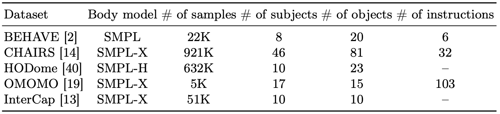
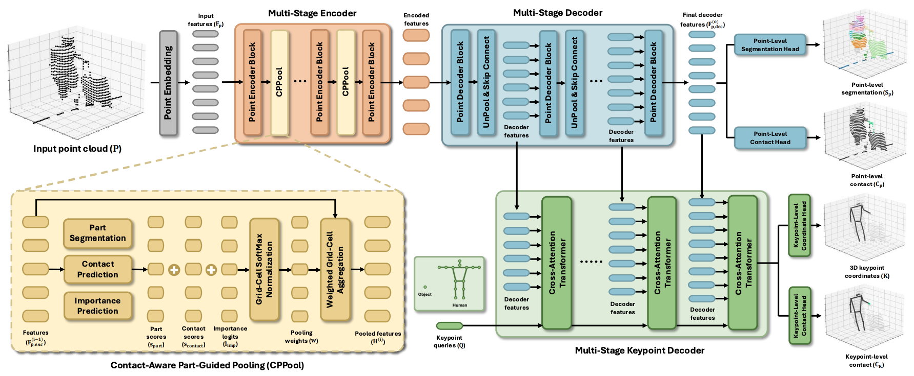
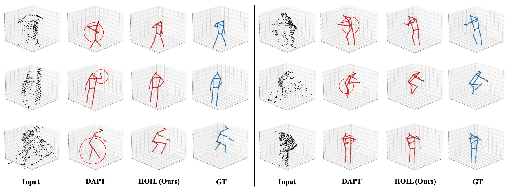

Understanding humans from LiDAR point clouds is one of the most critical tasks in autonomous driving due to its close relationships with pedestrian safety, yet it remains challenging in the presence of diverse human-object interactions and cluttered backgrounds. Nevertheless, existing methods largely overlook the potential of leveraging human-object interactions to build robust 3D human pose estimation frameworks. There are two major challenges that motivate the incorporation of human-object interaction. First, human-object interactions introduce spatial ambiguity between human and object points, which often leads to erroneous 3D human keypoint predictions in interaction regions. Second, there exists severe class imbalance in the number of points between interacting and non-interacting body parts, with the interaction-frequent regions such as hand and foot being sparsely observed in LiDAR data. To address these challenges, we propose a Human-Object Interaction Learning (HOIL) framework for robust 3D human pose estimation from LiDAR point clouds. To mitigate the spatial ambiguity issue, we present human-object interaction-aware contrastive learning (HOICL) that effectively enhances feature discrimination between human and object points, particularly in interaction regions. To alleviate the class imbalance issue, we introduce contact-aware part-guided pooling (CPPool) that adaptively reallocates representational capacity by compressing overrepresented points while preserving informative points from interacting body parts. In addition, we present an optional contact-based temporal refinement that refines erroneous per-frame keypoint estimates using contact cues over time. As a result, our HOIL effectively leverages human-object interaction to resolve spatial ambiguity and class imbalance in interaction regions. Codes will be released.
We utilize 5 datasets with various human-object interactions. All of the datasets contain everyday objects that are frequently interacted on the road by humans.

Given an input point cloud, we first embed it into input features and encode them using a multi-stage encoder with CPPool. The encoded features are then progressively decoded through a multi-stage decoder to produce the final decoder features. At each decoding stage, keypoint queries are iteratively updated via multi-stage keypoint decoder with decoder features. Lastly, HOIL predicts point-level segmentation and contact from the final decoder feature, and 3D keypoint coordinates and keypoint-level contact from keypoint queries.


There's a lot of excellent works that we wish to share.
Pre-training a Density-Aware Pose Transformer for Robust LiDAR-based 3D Human Pose Estimation.
Use All The Labels: A Hierarchical Multi-Label Contrastive Learning Framework.
Targeted Supervised Contrastive Learning for Long-Tailed Recognition.
Joint Reconstruction of 3D Human and Object via Contact-Based Refinement Transformer.
@article{jung2026hoil,
title={Learning Human-Object Interaction for 3D Human Pose Estimation from LiDAR Point Clouds},
author={Jung, Daniel Sungho and Cho, Dohee and Lee, Kyoung Mu},
journal={arXiv},
year={2026}
}